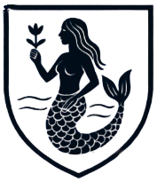

Mearim
Origem da palavra Mearim
Vindo da língua tupi, o nome Mearim pode vir de:
“Myarim” ou “Mbyarym”
"M'ya" ou "Mboya" mover-se, agitar (referente à água)
"rim" = sufixo intensificador ou diminutivo
Assim, "Mearim" pode ser interpretado como:
“Rio das águas agitadas” ou “Rio de correntezas”
Lenda da Sereia Yara
conhecida como Lenda da Mãe da água, faz parte do folclore brasileiro. Trata-se de uma lenda folclórica de origem indígena, oriunda da região amazônica. Apesar de ser originária dessa região, a Lenda da Iara é conhecida em todo Brasil.
conhecida como Lenda da Mãe da água, faz parte do folclore brasileiro. Trata-se de uma lenda folclórica de origem indígena, oriunda da região amazônica. Apesar de ser originária dessa região, a Lenda da Iara é conhecida em todo Brasil.
As pessoas da casa Mearim são filhos do rio, possuem o espirito da água. Boa parte das vezes são bem
agitados mas sabem aproveitar da boa calmaria, sendo turbulentos e calmos como o rio e sensatos ao nadar
pelas correntezas.